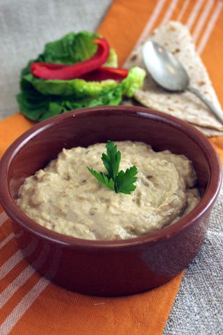

Baba Ganoush Recipe

Description
This Roasted Eggplant Dip is known as Baba Ganoush in the Middle East and
as Melitzanosalata in Greece.
Similar to hummus, this roasted eggplant dip is a perfect blend of smokey
eggplant, freshly squeezed lemon juice, plenty of garlic, tahini, and
olive oil.
Ingredients
- 1 lb. large eggplant
- 1 teaspoon salt (divided)
- 1½ tablespoon olive oil (divided)
- 1 tablespoon sesame seed oil
- 2 cloves garlic
- 3 tablespoon tahini paste
- 2 tablespoon lemon juice
- ½ teaspoon cumin (optional)
- 1 tablespoon chopped parsley
- 1 tablespoon toasted pine nuts
- ½ teaspoon cayenne pepper or paprika
Steps
-
Slice large eggplant in half. Sprinkle with ¼ tsp. salt. Place in a
colander, flesh-side down and allow eggplant to sweat out the bitter
juices for approximately 30 minutes. Rinse the salt off, they dry off
with paper towels.
- Preheat oven to 450 Degrees F.
-
Smear ½ teaspoon of olive on a foil-lined pan. Place eggplant flesh-side
down on the pan. Add unpeeled garlic cloves. Pour 1 teaspoon olive oil
over them.
-
Place pan in the oven. After 15 minutes, remove the garlic, and flip the
eggplant over to the other side and cook an additional 15 minutes, or
until slightly charred.
-
When cool enough to handle, scrape the eggplant flesh away from the skin
using a large spoon. Drain in a colander for a few minutes.
-
Meanwhile, add the remaining salt, sesame seed oil, peeled and crushed
garlic, tahini paste, lemon juice, and cumin (if using) to a food
processor.
-
Add eggplant flesh to the food processor, along with the other
ingredients. Pulse a few times, to mix. Do not over-mix, baba ghanoush
should have a chunky consistency.
-
Plate the baba ghanoush and refrigerate until ready to serve. Before
serving, drizzle with the remaining 1 Tablespoon of olive oil. Garnish
with any of the following: chopped parsley, paprika/cayenne pepper, and
toasted pine nuts.